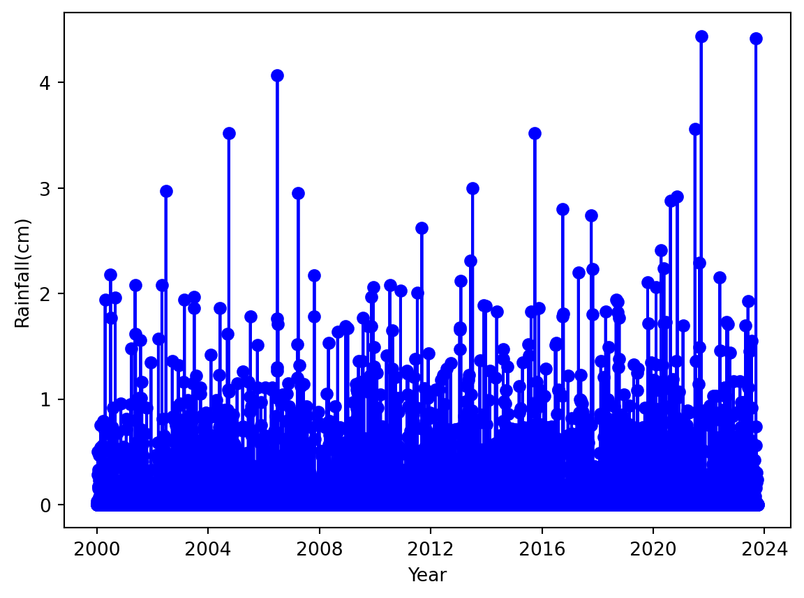
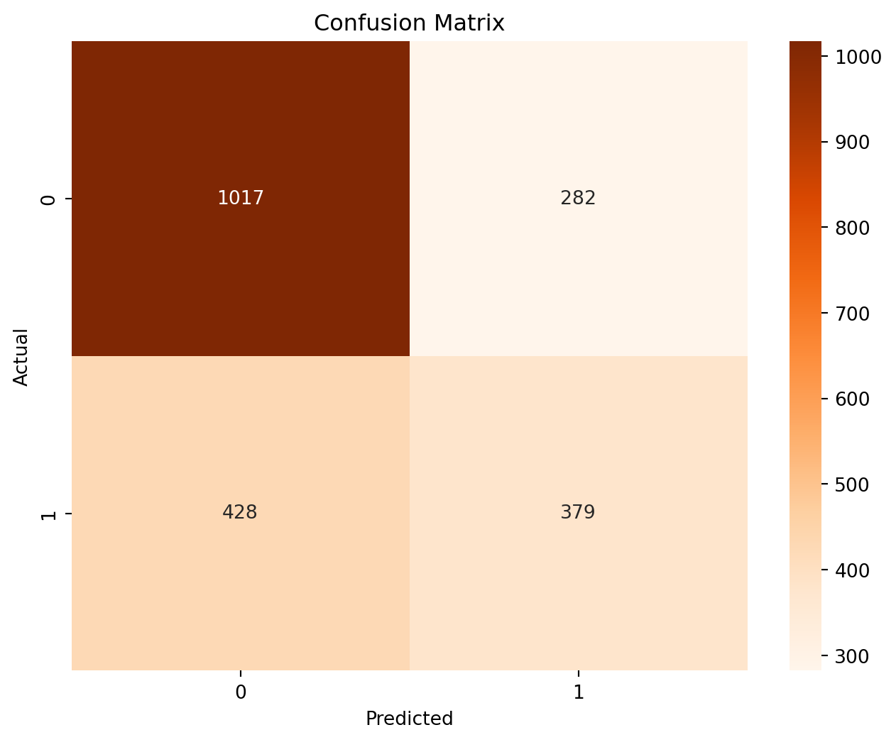
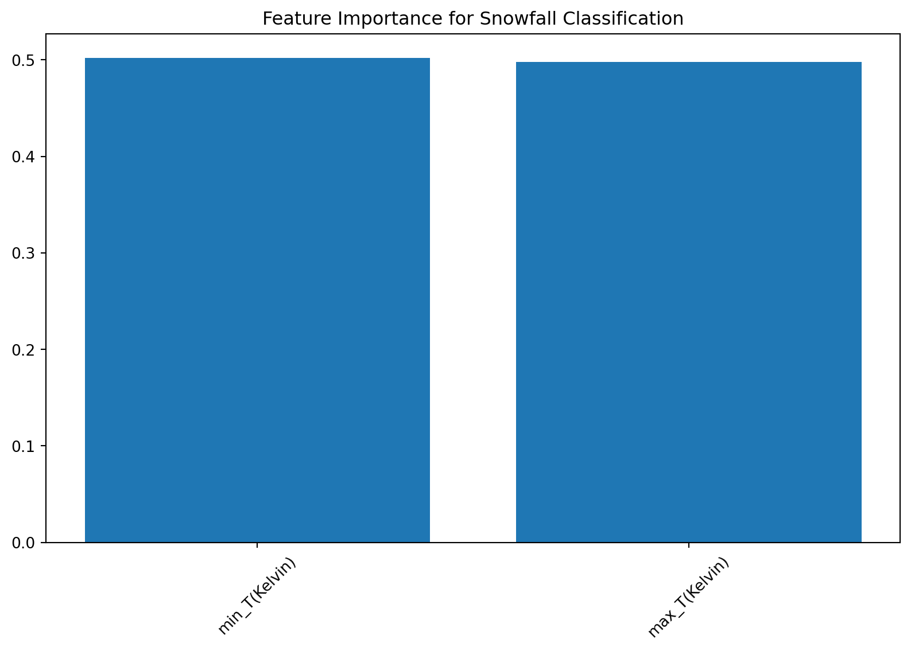
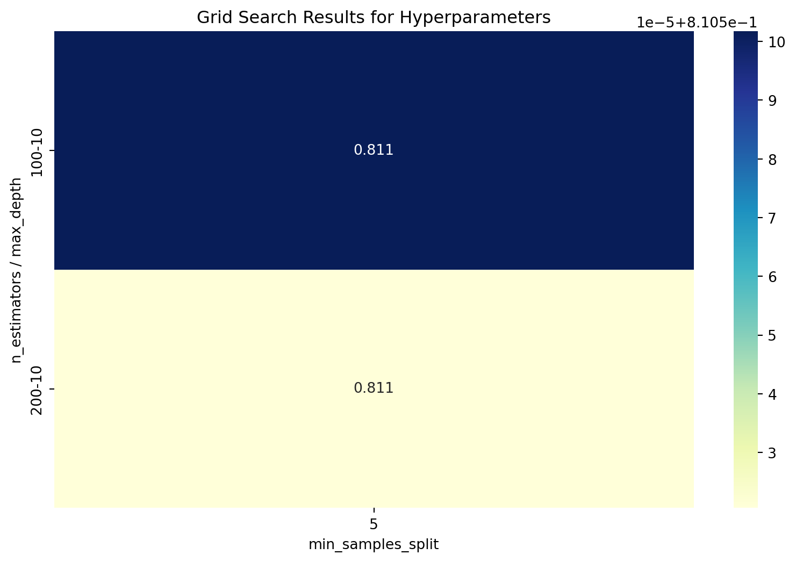
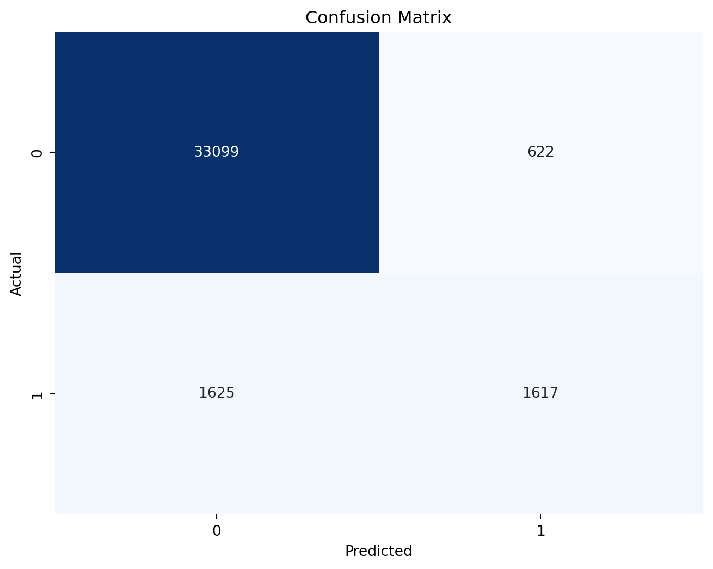
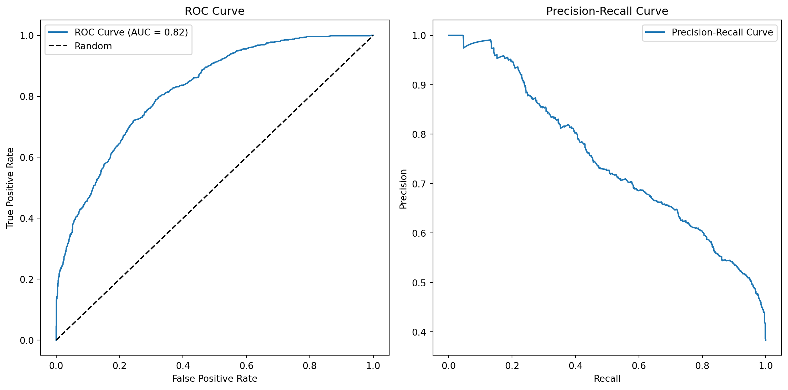

import pandas as pd
import numpy as np
import matplotlib.pyplot as pl
import seaborn as sns
from sklearn.feature_selection import SelectKBest, chi2
from sklearn.model_selection import train_test_split
from sklearn.ensemble import RandomForestClassifier
from sklearn.metrics import classification_report, confusion_matrix
from sklearn.model_selection import GridSearchCV
from sklearn.ensemble import RandomForestClassifier
from sklearn.metrics import accuracy_score
from sklearn.metrics import roc_curve, roc_auc_score, precision_recall_curve
from scipy.stats import ttest_ind
from sklearn.model_selection import RandomizedSearchCV
from scipy.stats import randintFirst we start with importing some of the required libraries
Importing the data set
df = pd.read_csv("Blacksburg_weather_dataset.csv", index_col="DATE")
df.head()| STATION | LATITUDE | LONGITUDE | ELEVATION | DAPR | MDPR | PRCP | SNOW | SNWD | TMAX | TMIN | TOBS | |
|---|---|---|---|---|---|---|---|---|---|---|---|---|
| DATE | ||||||||||||
| 1/1/2000 | USC00440766 | 37.2039 | -80.4144 | 641.0 | NaN | NaN | 0.00 | 0.0 | 0.0 | 56.0 | 25.0 | 33.0 |
| 1/2/2000 | USC00440766 | 37.2039 | -80.4144 | 641.0 | NaN | NaN | 0.00 | 0.0 | 0.0 | 59.0 | 33.0 | 36.0 |
| 1/3/2000 | USC00440766 | 37.2039 | -80.4144 | 641.0 | NaN | NaN | 0.00 | 0.0 | 0.0 | 63.0 | 34.0 | 41.0 |
| 1/4/2000 | USC00440766 | 37.2039 | -80.4144 | 641.0 | NaN | NaN | 0.00 | 0.0 | 0.0 | 66.0 | 38.0 | 58.0 |
| 1/5/2000 | USC00440766 | 37.2039 | -80.4144 | 641.0 | NaN | NaN | 0.03 | 0.0 | 0.0 | 60.0 | 26.0 | 26.0 |
To make the data machine learning ready, we first identify the missing values, for that
df.apply(pd.isnull).sum()/df.shape[0]STATION 0.765982
LATITUDE 0.765982
LONGITUDE 0.765982
ELEVATION 0.765982
DAPR 1.000000
MDPR 1.000000
PRCP 0.765982
SNOW 0.769959
SNWD 0.769959
TMAX 0.766145
TMIN 0.766253
TOBS 0.766145
dtype: float64Let’s only take some of the features that we may need and let’s convert them into columns
bb_weather= df[["PRCP", "SNOW", "TMAX", "TMIN"]].copy()
bb_weather.columns = ["rain", "snow", "max_T", "min_T"]
bb_weather.head()| rain | snow | max_T | min_T | |
|---|---|---|---|---|
| DATE | ||||
| 1/1/2000 | 0.00 | 0.0 | 56.0 | 25.0 |
| 1/2/2000 | 0.00 | 0.0 | 59.0 | 33.0 |
| 1/3/2000 | 0.00 | 0.0 | 63.0 | 34.0 |
| 1/4/2000 | 0.00 | 0.0 | 66.0 | 38.0 |
| 1/5/2000 | 0.03 | 0.0 | 60.0 | 26.0 |
bb_weather.apply(pd.isnull).sum()/bb_weather.shape[0]rain 0.765982
snow 0.769959
max_T 0.766145
min_T 0.766253
dtype: float64Let’s find out how many days there were rain in Blacksburg in the data set
bb_weather["rain"].value_counts()rain
0.00 5408
0.01 327
0.02 214
0.03 171
0.05 129
...
2.31 1
3.00 1
1.37 1
1.89 1
4.42 1
Name: count, Length: 206, dtype: int64Since we are only concerned about the rainfall in Blacksburg and not the snowfall, let’s delete snowfall column
del bb_weather['snow']Now, let’s fill all the days which has rainfall values missing as 0. Here, we can also delete the concerned rows but here we are using 0 as the replacement.
bb_weather["rain"] = bb_weather["rain"].fillna(0)bb_weather.apply(pd.isnull).sum()rain 0
max_T 28319
min_T 28323
dtype: int64Since the weather of following day is mostly similar to the previous day we use forward fill in this case unlike rainfall
bb_weather = bb_weather.fillna(method="ffill")documentation of this file says if any item has 9999 then this is the missing values, so to identify them we have this
bb_weather.apply(lambda x: (x == 9999).sum())rain 0
max_T 0
min_T 0
dtype: int64bb_weather.index = pd.to_datetime(bb_weather.index)let’s visualize the rainfall in different years.
pl.plot(bb_weather['rain'],color='blue',marker='o')
pl.xlabel('Year')
pl.ylabel('Rainfall(cm)')Text(0, 0.5, 'Rainfall(cm)')
Now, let’s create a new weather column based on the condition as rainy and non-rainy days.
bb_weather['weather'] = 'not_rainy'
bb_weather.loc[bb_weather['rain'] > 0, 'weather'] = 'rainy'
print(bb_weather) rain max_T min_T weather
DATE
2000-01-01 0.00 56.0 25.0 not_rainy
2000-01-02 0.00 59.0 33.0 not_rainy
2000-01-03 0.00 63.0 34.0 not_rainy
2000-01-04 0.00 66.0 38.0 not_rainy
2000-01-05 0.03 60.0 26.0 rainy
... ... ... ... ...
NaT 0.00 79.0 50.0 not_rainy
NaT 0.00 79.0 50.0 not_rainy
NaT 0.00 79.0 50.0 not_rainy
NaT 0.00 79.0 50.0 not_rainy
NaT 0.00 79.0 50.0 not_rainy
[36963 rows x 4 columns]Since, it is difficult to deal with the words like rainy and non-rainy to perform our classification, we use one-hot encoding method to convert them into binary numbers as 1 and 0, where 1 represents rainy days.
weather_encoded = pd.get_dummies(bb_weather['weather'], prefix='weather')
bb_weather_encoded = pd.concat([bb_weather, weather_encoded], axis=1)
bb_weather_encoded.drop('weather', axis=1, inplace=True)
print(bb_weather_encoded) rain max_T min_T weather_not_rainy weather_rainy
DATE
2000-01-01 0.00 56.0 25.0 True False
2000-01-02 0.00 59.0 33.0 True False
2000-01-03 0.00 63.0 34.0 True False
2000-01-04 0.00 66.0 38.0 True False
2000-01-05 0.03 60.0 26.0 False True
... ... ... ... ... ...
NaT 0.00 79.0 50.0 True False
NaT 0.00 79.0 50.0 True False
NaT 0.00 79.0 50.0 True False
NaT 0.00 79.0 50.0 True False
NaT 0.00 79.0 50.0 True False
[36963 rows x 5 columns]Since we may get some of our values as negative also as the temperature might fall below 0 during winter, we convert our temperature in Farenheit to Kelvin using relation
\((T-32)*5/9 + 273.15\)
bb_weather_encoded['min_T(Kelvin)'] = (bb_weather_encoded['min_T'] - 32) * 5/9 + 273.15
bb_weather_encoded['max_T(Kelvin)'] = (bb_weather_encoded['max_T'] - 32) * 5/9 + 273.15bb_weather_encoded.tail()| rain | max_T | min_T | weather_not_rainy | weather_rainy | min_T(Kelvin) | max_T(Kelvin) | |
|---|---|---|---|---|---|---|---|
| DATE | |||||||
| NaT | 0.0 | 79.0 | 50.0 | True | False | 283.15 | 299.261111 |
| NaT | 0.0 | 79.0 | 50.0 | True | False | 283.15 | 299.261111 |
| NaT | 0.0 | 79.0 | 50.0 | True | False | 283.15 | 299.261111 |
| NaT | 0.0 | 79.0 | 50.0 | True | False | 283.15 | 299.261111 |
| NaT | 0.0 | 79.0 | 50.0 | True | False | 283.15 | 299.261111 |
For simplified operation, we also need to convert the rain column into binary not only the weather column.
rainfall = pd.DataFrame(bb_weather_encoded)
rainfall['rain'] = (rainfall['rain'] > 0).astype(int)To make maximum temperature and the minimum temperatures as our main features, let’s use chi-squared test and select K best features.
X = rainfall[['max_T(Kelvin)','min_T(Kelvin)']]
y = rainfall['rain']
k_best = SelectKBest(score_func=chi2, k=2)
X_new = k_best.fit_transform(X, y)
selected_feature_indices = k_best.get_support(indices=True)
selected_features = X.columns[selected_feature_indices]
print("Selected features:", selected_features)Selected features: Index(['max_T(Kelvin)', 'min_T(Kelvin)'], dtype='object')For the classification of our data, we use the random forest classifier. By using this we find the classification report in the form of confusion matrix visualization.
For that let’s separate our data in terms of train and test part.
start_date_train = '2000-01-01'
end_date_train = '2017-12-31'
start_date_test = '2018-01-01'
end_date_test = '2023-10-05'we then create the mask fo the data ranges and extract the data for train and test and finally apply the random forest classifier.
mask_train = (X.index >= start_date_train) & (X.index <= end_date_train)
mask_test = (X.index >= start_date_test) & (X.index <= end_date_test)
X_train, y_train = X[mask_train], y[mask_train]
X_test, y_test = X[mask_test], y[mask_test]
rf_classifier = RandomForestClassifier(n_estimators=100, random_state=42)
rf_classifier.fit(X_train, y_train)
y_pred = rf_classifier.predict(X_test)Next is finding the classification report and the visualization in confusion matrix.
report = classification_report(y_test, y_pred)
print('Classification Report:\n', report)
confusion = confusion_matrix(y_test, y_pred)
print('Confusion Matrix:\n', confusion)
pl.figure(figsize=(8, 6))
sns.heatmap(confusion, annot=True, fmt='d', cmap='Oranges', xticklabels=np.unique(y), yticklabels=np.unique(y))
pl.xlabel('Predicted')
pl.ylabel('Actual')
pl.title('Confusion Matrix')
pl.show()Classification Report:
precision recall f1-score support
0 0.70 0.78 0.74 1299
1 0.57 0.47 0.52 807
accuracy 0.66 2106
macro avg 0.64 0.63 0.63 2106
weighted avg 0.65 0.66 0.66 2106
Confusion Matrix:
[[1017 282]
[ 428 379]]
Now to see if we can improve our results we perform feature importance.
feature_importance = rf_classifier.feature_importances_
feature_names = ['max_T(Kelvin)','min_T(Kelvin)']
importance_df = pd.DataFrame({'Feature': feature_names, 'Importance': feature_importance})
importance_df = importance_df.sort_values(by='Importance', ascending=False)
pl.figure(figsize=(10, 6))
pl.bar(importance_df['Feature'], importance_df['Importance'])
pl.xticks(rotation=45)
pl.title('Feature Importance for Snowfall Classification')
pl.show()
Then we define the hyper parameters and their possible values:
Here, we define the no. of trees in the forest(random forest classifier forest not the forest in nature), its max depth and we define the minimum samples to split internal node.
param_grid = {
'n_estimators': [100, 200, 300],
'max_depth': [None, 10, 20],
'min_samples_split': [2, 5, 10],
'min_samples_leaf': [1, 2, 4],
}
random_search = RandomizedSearchCV(rf_classifier, param_grid, n_iter=5, cv=5, scoring='accuracy', random_state=42)
random_search.fit(X, y)
best_params = random_search.best_params_
best_model = random_search.best_estimator_
print("Best Hyperparameters:")
print(best_params)
results = pd.DataFrame(random_search.cv_results_)Best Hyperparameters:
{'n_estimators': 100, 'min_samples_split': 2, 'min_samples_leaf': 4, 'max_depth': None}And for the pivot table and confusion matrix visualization
pivot_table = results.pivot_table(index=['param_n_estimators', 'param_max_depth'],
columns='param_min_samples_split',
values='mean_test_score')
pl.figure(figsize=(10, 6))
sns.heatmap(pivot_table, annot=True, fmt=".3f", cmap="YlGnBu")
pl.title("Grid Search Results for Hyperparameters")
pl.xlabel("min_samples_split")
pl.ylabel("n_estimators / max_depth")
pl.show()
To identify, how accurate is the result that we obtained
final_model = RandomForestClassifier(
n_estimators=100,
max_depth=10,
min_samples_split=10,
min_samples_leaf=2,
random_state=42
)
final_model.fit(X, y)
y_pred = final_model.predict(X)
final_accuracy = accuracy_score(y, y_pred)
print(f"Final Model Accuracy: {final_accuracy:.2f}")Final Model Accuracy: 0.94And hence following the same steps that we did earlier, we get new classification results.
report1 = classification_report(y, y_pred)
print('Classification Report:\n', report1)Classification Report:
precision recall f1-score support
0 0.95 0.98 0.97 33721
1 0.72 0.50 0.59 3242
accuracy 0.94 36963
macro avg 0.84 0.74 0.78 36963
weighted avg 0.93 0.94 0.93 36963
confusion = confusion_matrix(y, y_pred)
# Create a heatmap of the confusion matrix
pl.figure(figsize=(8, 6))
sns.heatmap(confusion, annot=True, fmt="d", cmap="Blues", cbar=False, xticklabels=True, yticklabels=True)
pl.xlabel('Predicted')
pl.ylabel('Actual')
pl.title('Confusion Matrix')
pl.show()
Now to examine the Random Forest Model’s performance, we first make ROC and Precision-Recall curves.
It also help us identify the trade offs involved in different threshold settings.
y_prob = best_model.predict_proba(X_test)[:, 1]
fpr, tpr, thresholds_roc = roc_curve(y_test, y_prob)
auc_roc = roc_auc_score(y_test, y_prob)
precision, recall, thresholds_pr = precision_recall_curve(y_test, y_prob)And to visualize:
pl.figure(figsize=(12, 6))
# Plotting ROC curve:
pl.subplot(1, 2, 1)
pl.plot(fpr, tpr, label=f'ROC Curve (AUC = {auc_roc:.2f})')
pl.plot([0, 1], [0, 1], 'k--', label='Random')
pl.xlabel('False Positive Rate')
pl.ylabel('True Positive Rate')
pl.title('ROC Curve')
pl.legend()
# Plotting PR curve:
pl.subplot(1, 2, 2)
pl.plot(recall, precision, label='Precision-Recall Curve')
pl.xlabel('Recall')
pl.ylabel('Precision')
pl.title('Precision-Recall Curve')
pl.legend()
# Adjusting the layout to prevent overlap of subplots
pl.tight_layout()
And Finally for the T-test results and the accuracy scores:
In the future, if we want to know the accuracy of any dataframe directly we can use the following code to directly give the accuracy score once we upload a file which has been cleaned to make ML ready.
"
# Accuracy score Prediction
#Load the trained ML model
model = joblib.load("filename") \# Replace with the path to your model file
def predict_snowfall(min_temp, max_temp): try:
\# Create a DataFrame with the input data
input_data = pd.DataFrame({'min_T(Kelvin)': \[min_temp\], 'max_T(Kelvin)': \[max_temp\]})# Make predictions
prediction = model.predict(input_data)
return prediction[0]except Exception as e: return str(e)
if **name** == '**main**': print("Temperature to rainfall Prediction")
min_temp = float(input("Enter Minimum Temperature (Kelvin):"))
max_temp = float(input("Enter Maximum Temperature (Kelvin):"))result = predict_rainfall(min_temp, max_temp) print(f”rainfall Prediction: {result}“) ```
”